全球南方，万物起源。
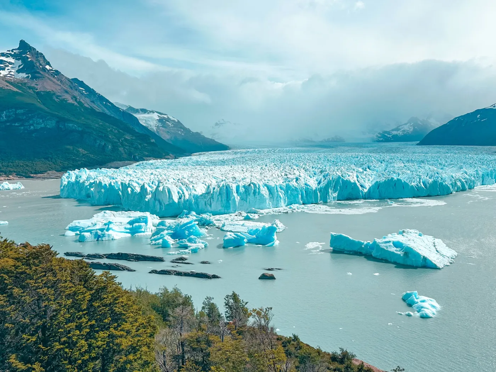
一次旅行，两个国家，五个站点：埃尔卡拉法特的佩里托·莫雷诺冰川、百内的花岗岩塔峰、纳塔莱斯港、位于麦哲伦海峡畔的蓬塔阿雷纳斯，以及世界最南端的城市乌斯怀亚。全程12天陆路，两次过境，一路向南，直到大陆的尽头。可以乘巴士，也可以租车：在埃尔卡拉法特取车、在乌斯怀亚还车，或反过来。
| 天数 | 站点 | 活动 | 交通 |
|---|---|---|---|
| 第1至3天 | 埃尔卡拉法特 🇦🇷 | 佩里托·莫雷诺冰川、栈道和游船；尼梅斯潟湖 | 乘飞机抵达 |
| 第4天 | 纳塔莱斯港 🇨🇱 | 抵达并为前往公园做准备 | 过境巴士，4至7小时 |
| 第5至7天 | 百内国家公园 🇨🇱 | 佩奥埃湖、塔底、格雷冰川 | 从纳塔莱斯港乘巴士或参加一日游 |
| 第8天 | 蓬塔阿雷纳斯 🇨🇱 | 麦哲伦海峡畔的城市 | 巴士，约3小时 |
| 第9天 | 蓬塔阿雷纳斯 🇨🇱 | （旺季）前往企鹅栖息地，并游览市中心 | — |
| 第10天 | 前往乌斯怀亚途中 | 乘渡轮横渡海峡，在圣塞巴斯蒂安过境 | 巴士，10至12小时 |
| 第11至12天 | 乌斯怀亚 🇦🇷 | 火地岛国家公园和比格尔海峡游船 | 乘飞机返回 |
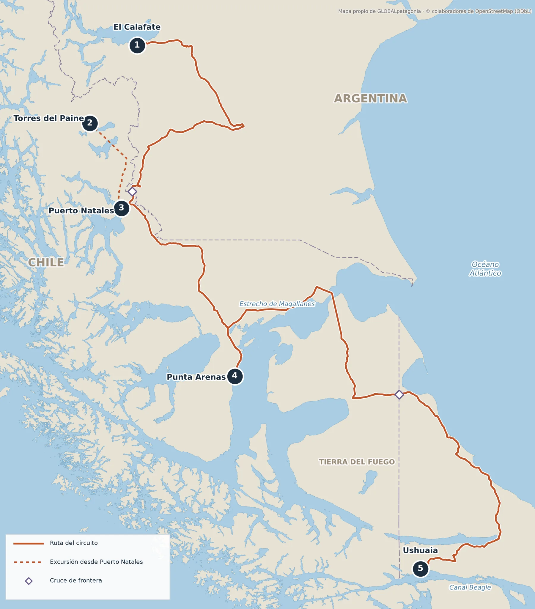
| 路段 | 大致距离 | 大致时间 | 方式 |
|---|---|---|---|
| 埃尔卡拉法特 → 纳塔莱斯港 | 350公里 | 4至7小时 | 巴士，需过境 |
| 纳塔莱斯港 → 百内国家公园 | 110公里 | 2小时 | 巴士或自驾，到阿马尔加湖入口 |
| 纳塔莱斯港 → 蓬塔阿雷纳斯 | 250公里 | 3小时 | 巴士 |
| 蓬塔阿雷纳斯 → 乌斯怀亚 | 600公里 | 10至12小时 | 巴士，需乘渡轮过海峡，并在圣塞巴斯蒂安过境 |
| 陆路总里程 | 1,200公里 | — | 从埃尔卡拉法特到乌斯怀亚，不含百内一日游 |
白昼长、游客少、价格较低。部分服务刚开始营业，公园里风已经很大。
天气最好，所有服务都开放，但这是旺季：请提前很久预订机票、巴士和住宿。
森林染成红色，游客较少。巴士班次变少，企鹅栖息地也已不再活跃。
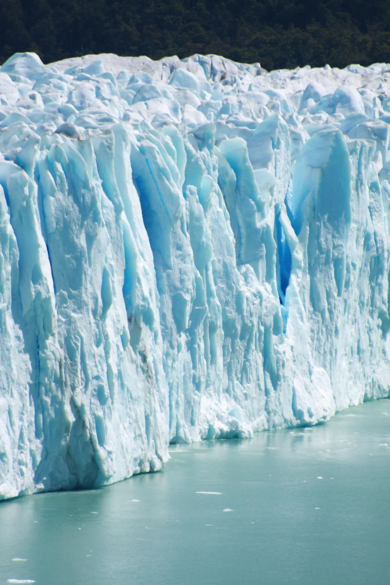
这里是洛斯格拉西亚雷斯国家公园的大门，该公园是联合国教科文组织世界遗产。可以从栈道、乘船或在冰面上行走欣赏佩里托·莫雷诺冰川。还有时间和精力去尼梅斯潟湖和小镇逛逛。 查看埃尔卡拉法特指南 →

三天足以看到精华：一天去佩奥埃湖观景台看原驼，一天徒步到塔底（8至10小时），一天看格雷冰川。 查看百内国家公园指南 →
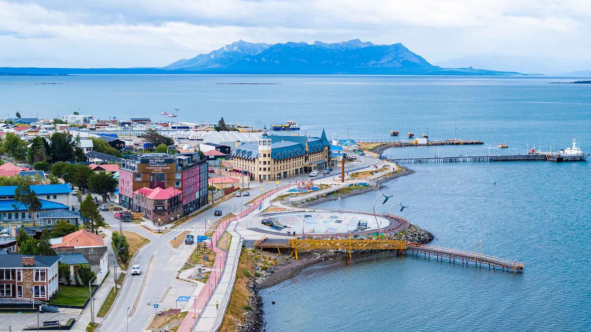
这里是前往公园的大本营，距公园约110公里：青旅、餐厅和装备店一应俱全。去程和回程都在这里中转。小镇位于乌尔蒂马埃斯佩兰萨湾畔，可眺望海峡和远处的群山。
麦哲伦海峡最大的城市，沿岸是色彩缤纷的房屋，中央广场庄重典雅。前往企鹅栖息地的游览从这里出发，仅在旺季运行：请先查日期并提前预订。
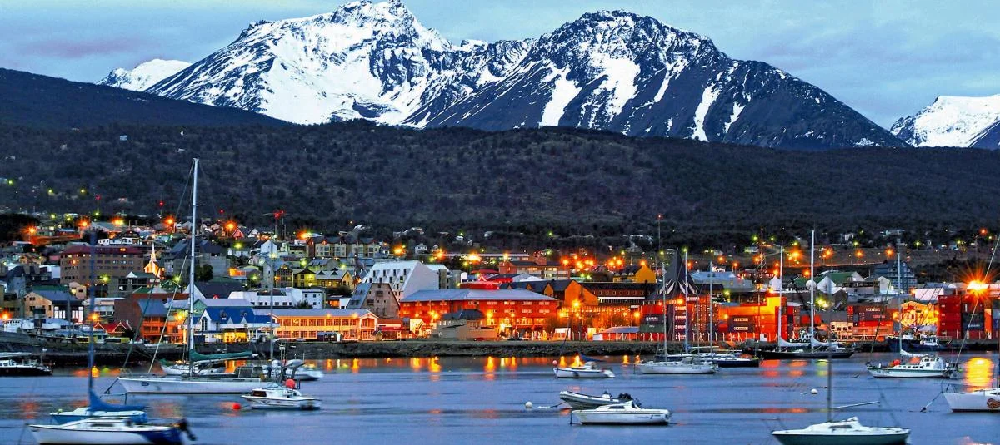
世界最南端的城市，位于山脉与比格尔海峡之间。两天时间足够游览火地岛国家公园，并乘船游览海峡，看海狮和灯塔。 查看乌斯怀亚指南 →
整条线路的代表菜，烤着吃或炖着吃。在埃尔卡拉法特、纳塔莱斯港和乌斯怀亚都能吃到，在牧场里烤肉就在眼前制作。甜点可以找用卡拉法特果（calafate）做的糖果和冰淇淋，这种浆果也是小镇名字的由来。
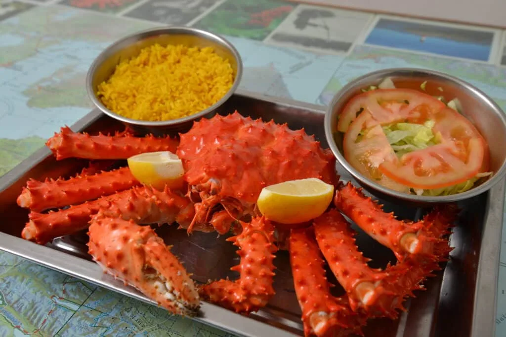
比格尔海峡和麦哲伦海峡的“海中之后”。在蓬塔阿雷纳斯、纳塔莱斯港，尤其是乌斯怀亚都能点到，可原味吃，也可焗烤。这是一道价格不低的菜：点之前请先问价。
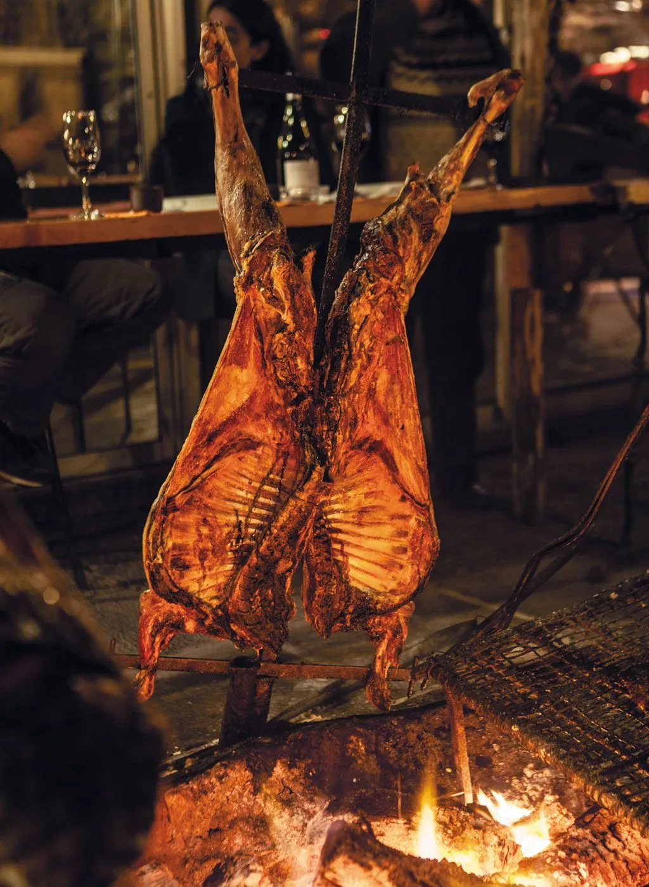
在乌斯怀亚，羊肉是用十字架烤的，还有鳟鱼、巴塔哥尼亚齿鱼和海峡冷水里的贝类。这样的一顿晚餐，是这次旅行最自然的收尾。
每个小镇都有自己的啤酒厂。长时间徒步之后，是个不错的歇脚处。
在智利一侧，皮斯科酸酒几乎配得上任何一桌菜。中央山谷的葡萄酒出现在每家菜单上。
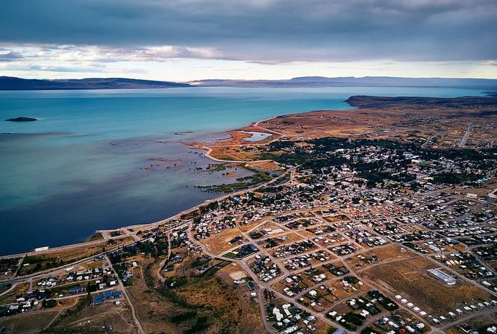
在离市中心几分钟的尼梅斯潟湖保护区散步，可以看到火烈鸟和湖鸟。通往冰川路上的冰川博物馆（Glaciarium），以及能看剪羊毛、品尝全套烤肉的牧场，可以组成不去冰川的一天。
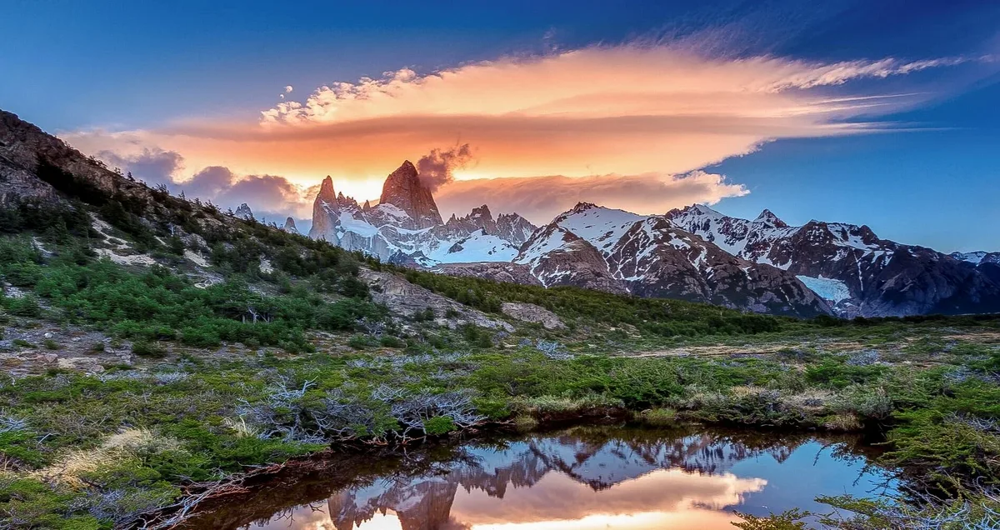
如果多出一天，埃尔查尔滕距埃尔卡拉法特约三小时，是阿根廷的徒步之都，位于菲茨罗伊峰脚下。可以一日往返，也可以住一晚。
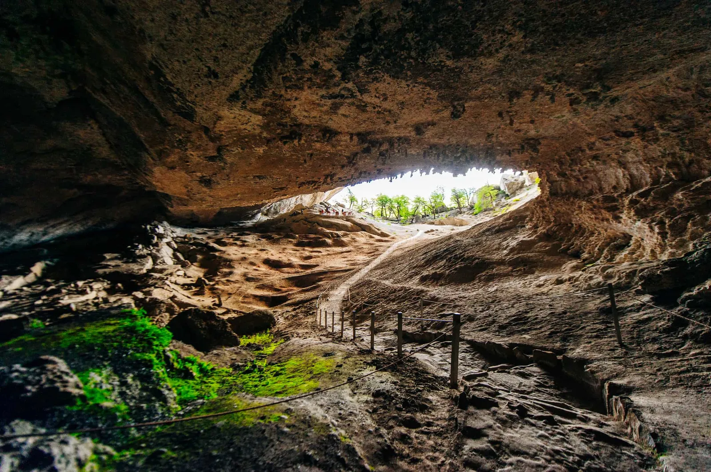
在纳塔莱斯港以北约25公里的米洛东洞穴里，发现了数千年前巨型树懒的遗骸。这是一次半天的短途游览，很适合在徒步之间的休整日安排。
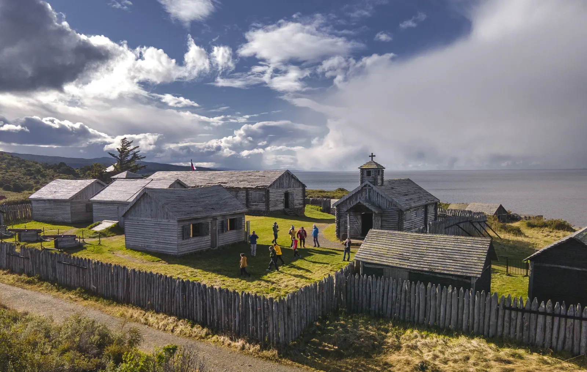
在城市以南约55公里的海峡边，是1843年建立的布尔内斯堡：该地区第一个智利定居点。如今参观的是重建后的版本，有木屋、小教堂和木栅栏，也是沿海岸半日游的好去处。
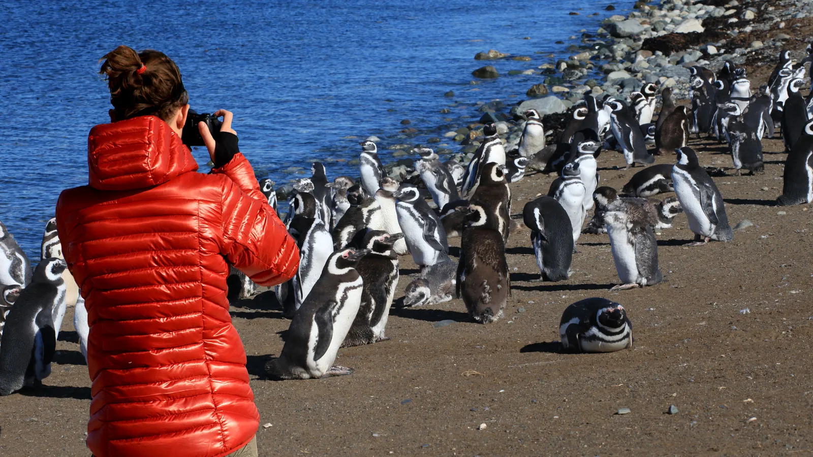
旺季时，乘船前往塞诺奥特韦或马格达莱纳岛的企鹅栖息地，是最受欢迎的游览。在市内，两个小时足够逛穆尼奥斯·加梅罗广场、市立公墓和十字架山观景台。班次取决于天气和日历：请提前预订。
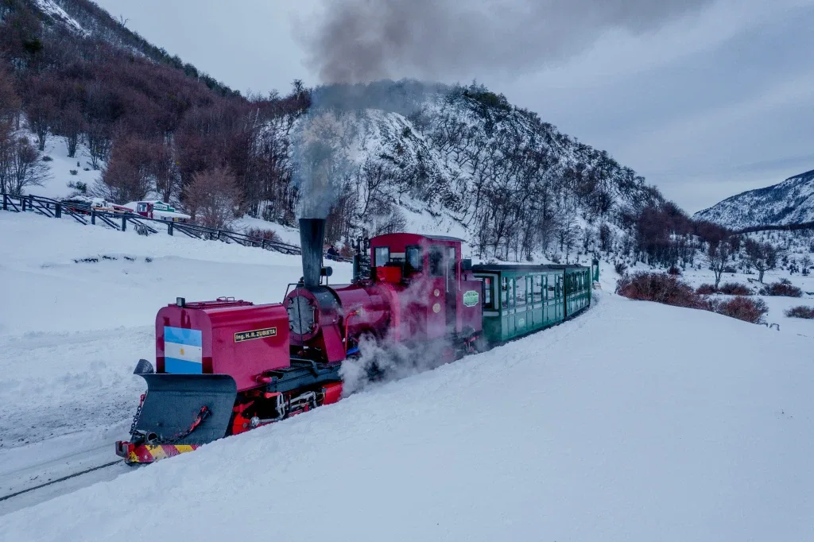
一台蒸汽机车行驶在旧囚犯线路的一段上，穿过南方山毛榉林，沿皮波河而行，位于火地岛国家公园内。全程约两小时，非常热门：旺季请提前预订。
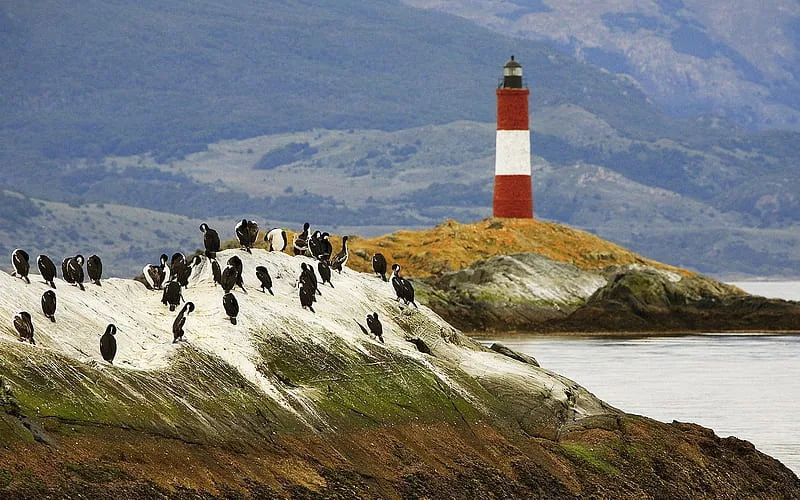
比格尔海峡游船会开到莱斯埃克莱厄灯塔以及海狮和鸬鹚栖息的岛屿。陆地上有世界尽头博物馆和旧监狱（如今是海事和监狱博物馆）。时间充裕的话，从市区步行一小段就能到达马蒂亚尔冰川。
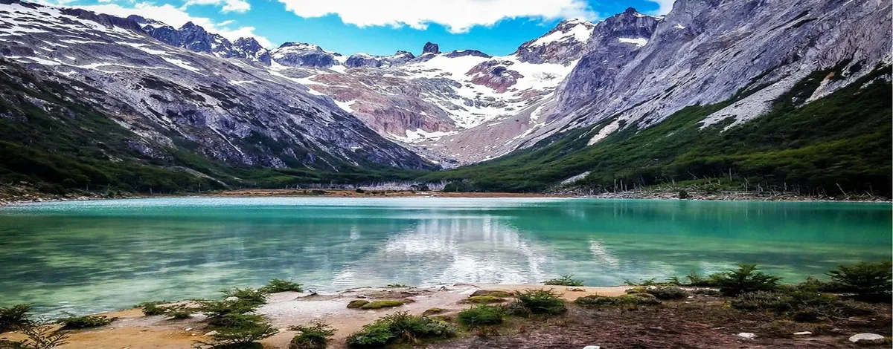
半天徒步，穿过泥炭沼泽和南方山毛榉林，到达冰川脚下碧绿的潟湖。对想走路但体力不太足的人来说，这是最值得推荐的一日游。
过境巴士：视公司和过境检查耗时，需4至7小时。旺季每天有数班；淡季班次较少，也不是每天都有。
约250公里，大约3小时。夏季每天班次很多，冬季较少。可在车站或网上购票。
最长的一段：巴士10至12小时，包括乘渡轮横渡麦哲伦海峡（30至45分钟，视天气而定）和在圣塞巴斯蒂安过境检查。各公司并非每天发车，渡轮也取决于天气。
如果时间紧，可以在蓬塔阿雷纳斯和乌斯怀亚之间飞，或从埃尔卡拉法特飞往全国其他地方，只把巴士留给较短的路段。航班随季节变化：规划行程前请先确认。
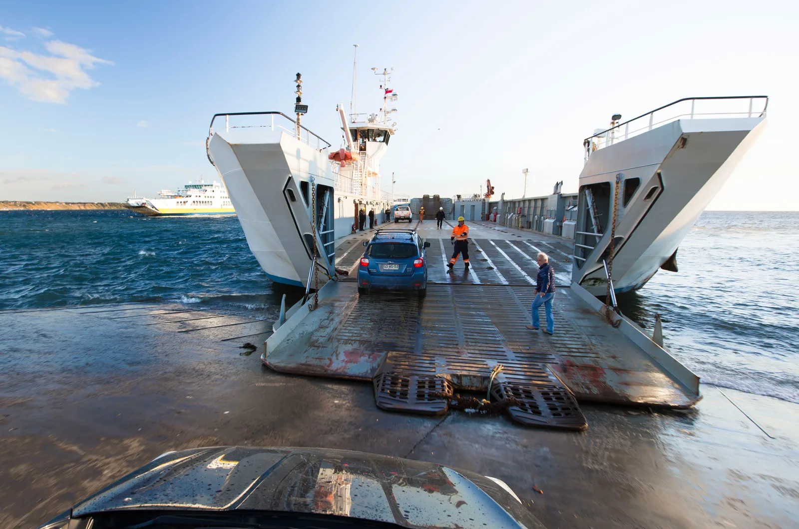
要到火地岛，必须乘渡轮横渡海峡，渡口在第一窄口（Primera Angostura），位于蓬塔德尔加达与阿苏尔湾之间。渡轮可载巴士、汽车和卡车，航程30至45分钟，视天气而定。风大时会延误或停航：所以行程里最好留出余量。
更自由的方式：在埃尔卡拉法特取车、在乌斯怀亚还车，或者反过来。 可以做到，但有条件。 两座城市都在阿根廷，租车公司要求车辆必须回到阿根廷；难点在于进入智利，以及取得这样做的授权。
这是必须的，并且要提前向公司申请：赫兹（Hertz）要求至少提前72小时，并附上护照和驾照复印件。需要公证授权书、在两国都有效的保险和车辆证件。没有许可，保险可能失效。
据旅行指南，赫兹、Localiza和Europcar允许出境，需另付费；Budget视情况而定，大多数本地公司不允许。在赫兹，经济型小车不能出境，乌斯怀亚获准出境的车队数量有限。
在埃尔卡拉法特和乌斯怀亚之间，异地还车有一笔费用，已公布的价目表上没有：预订前请让对方书面报出总价。在赫兹，把车还到阿根廷境外会被罚数千美元。
燃油、过路费和海峡渡轮（另付），以及全险，走碎石路时建议购买：一块挡风玻璃可能要300到800美元。
| 车型 | 每日 · 淡季 | 每日 · 夏季 | 夏季12天 | 适合 |
|---|---|---|---|---|
| 经济型轿车 | 40至55美元 | 65至85美元 | 780至1,020美元 | 城市和铺装公路，但通常不能出境到智利 |
| 紧凑型SUV | 60至80美元 | 95至130美元 | 1,140至1,560美元 | 最适合本线路：柏油路、少量碎石路和大风 |
| 中型SUV | 90至120美元 | 140至180美元 | 1,680至2,160美元 | 空间更大，四人乘坐更舒适 |
| 四驱皮卡 | 110至150美元 | 170至220美元 | 2,040至2,640美元 | 冬季、碎石路和离开主路 |
这条线路把许多小时的陆路旅行和百内的徒步结合在一起：塔底步道需要8至10小时，要爬碎石坡，风大且天气变化快。有几段路离医疗服务很远。
本指南仅供参考，不能替代医生或专业向导的意见。每个人都应评估自己和同行者的身体状况。